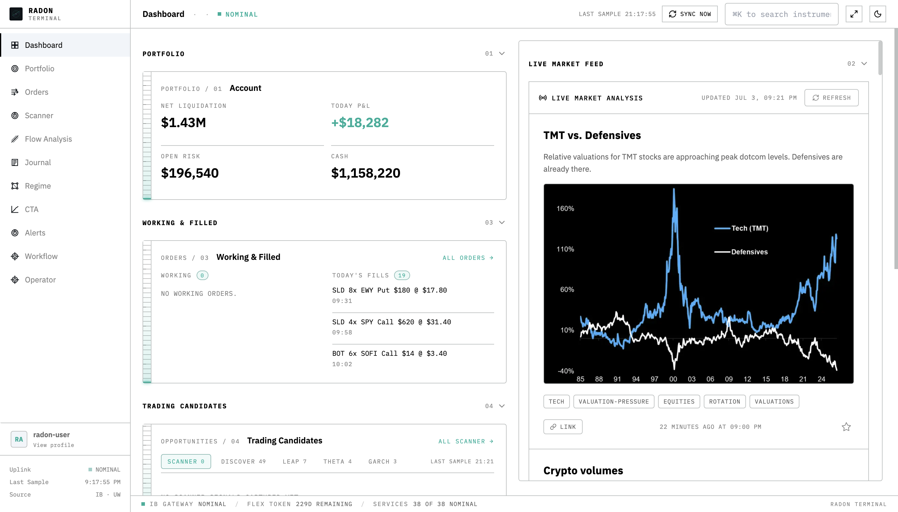
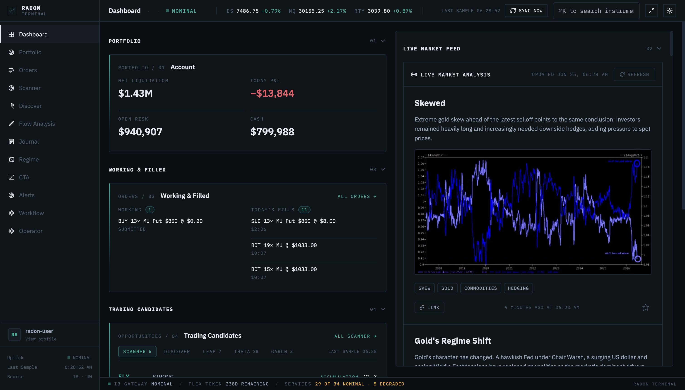
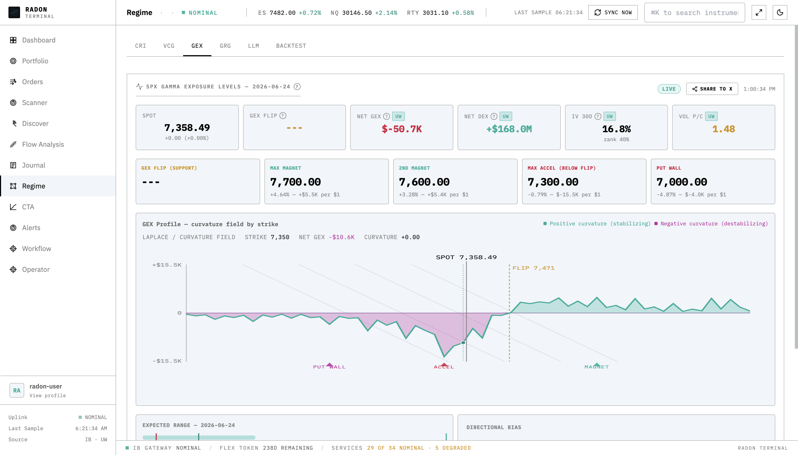
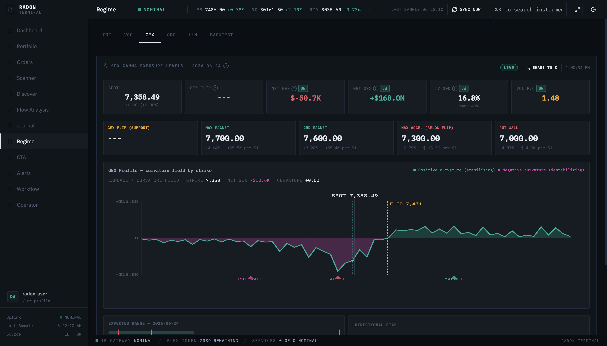
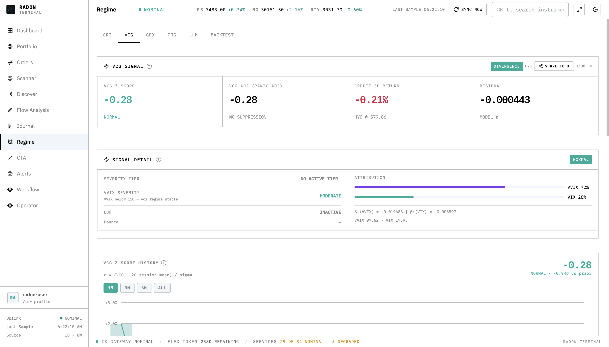
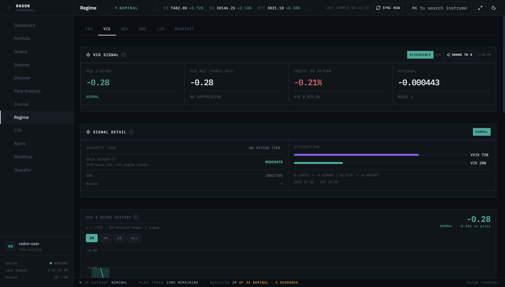
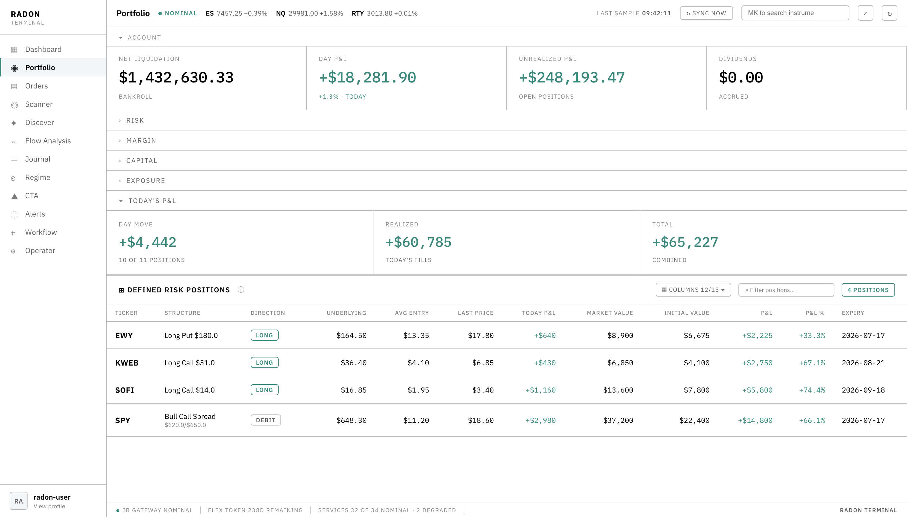
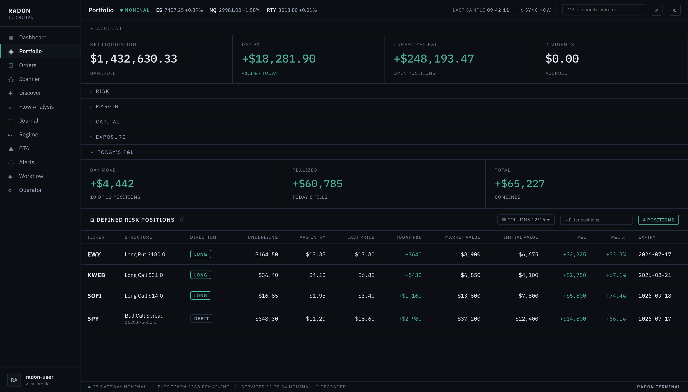

Institutions finish buying before the chart moves.
Radon reconstructs market structure from dark-pool and OTC flow, then scores institutional accumulation while the lit price is still quiet. The read comes from Interactive Brokers and Unusual Whales data, not a model that guesses. Nothing routes until it clears four sequential gates and seven milestones: convexity, defined risk, Kelly size. No black box. Every edge is a named, testable mechanism.


The edge is structural, not predictive.
Off-exchange venues clear large institutional orders away from the lit tape. By the time size prints on the exchange, the position is built. Radon reconstructs that activity from the print stream and scores it as accumulation or distribution before the move appears on a chart.
This is not forecasting. It is observation of a known mechanism with a measurable lead. The signal either clears a threshold or it does not.
Off-exchange and OTC prints from Unusual Whales, reconciled against Interactive Brokers realtime tape.
Volume is venue-weighted and normalized to a rolling z-score, then directional pressure is inferred from print-side and size clustering.
A threshold-crossing flow score that precedes the lit move, with the lead window measured per ticker and surfaced in the scanner.
| Ticker | Read | Lead | Flow score |
|---|---|---|---|
| NVDA | Accumulation | 4d | |
| WULF | Accumulation | 6d | |
| SMCI | Accumulation | 3d | |
| SPY | Neutral | · | |
| TSLA | Distribution | 5d |
A signal is permission to look. Convexity is permission to trade.
Every candidate is forced through four sequential gates before a contract is built. The gates are ordered. A failure at any gate stops the trade and names itself. There is no override that lets conviction outrank structure.
Convexity
The payoff must be asymmetric. Defined-risk structures only, with capped loss known at submit.
gain ≥ 2 × lossEdge
A specific, data-backed dark-pool or OTC signal that has not yet moved the lit price.
signal precedes priceRisk
Position size is fractional Kelly with a hard ceiling. No single position exceeds the cap.
≤ 2.5% bankrollNaked Shorts
Historically blocked undefined-risk shorts. Disabled by operator policy; logic preserved for re-enable.
no naked shortsNo single number describes a market.
Regime is read across four independent models, each measuring a different mechanical pressure. They are deliberately orthogonal. When they agree, the read is strong. When they diverge, the divergence is itself the signal.
Crash Risk Index
Method. Composite of skew steepness, term-structure inversion, and realized-implied gap. Calibrated to historical drawdown onsets. Rises before the tape acknowledges stress.
Gamma Exposure
Method. Aggregate dealer gamma by strike. Positive gamma pins and dampens; negative gamma amplifies. Surfaces walls (resistance) and magnets (gravity) as price levels.
Volatility-Credit Gap
Method. Tracks the spread between equity-implied vol and credit-implied stress. A widening gap with credit leading flags panic that the options market has not yet priced.
Gamma Rotation Gap
Method. Measures the migration of dealer gamma across sectors and tenors. A rotating gap signals where positioning is moving next, ahead of the flow following it.




A candidate is not a trade. Between the first flow score and a routed contract sit seven milestones, run in order. Each is a checkpoint with a pass condition. Nothing skips ahead.
Detect
Flow score crosses the accumulation or distribution threshold with a positive lead window. The signal is logged with its source and confidence.
gate · edgeCorroborate
Cross-check the read against the four regime models. A signal fighting the regime is downgraded, not ignored. Agreement raises conviction.
regime · CRI / GEX / VCG-R / GRGLocate
Map dealer gamma to find walls and magnets. These define realistic targets and the strikes where structure resists or accelerates price.
levels · walls / magnetsStructure
Select a defined-risk options structure that expresses the thesis with convexity. Multi-leg combos are preferred over single-leg directional bets.
convexity · gain ≥ 2× lossSize
Fractional Kelly sets the position against bankroll, capped hard at the per-position ceiling. Conviction adjusts within the cap, never past it.
risk · ≤ 2.5% bankrollVerify
The mandatory pre-trade chokepoint computes max-loss, margin impact, and naked-short exposure on the assembled combo. It is not optional and cannot be bypassed.
chokepoint · pre-trade riskRoute
Only a structure that cleared every prior milestone is assembled into an Interactive Brokers BAG combo and submitted. The audit trail records the full chain.
execute · IB BAG comboEvery strategy is a named, testable mechanism. No black box decides what to trade. Each entry states the edge source, the mechanism it exploits, and the structure's risk profile. Convexity is recorded as a target ratio.
| Strategy | Edge source | Mechanism | Structure | Convexity | Risk |
|---|---|---|---|---|---|
| Dark Leadflow | Off-exchange accumulation | Build a long call structure into a confirmed dark-pool lead before the lit move. | Call debit spread | ≥ 3.0× | Defined |
| Gamma Pinpositioning | Dealer gamma walls | Sell convexity into a positive-gamma wall where dealers dampen movement toward expiry. | Iron condor | ≥ 2.2× | Defined |
| Panic Gapvol / credit | Widening VCG-R | Buy tail convexity when credit-implied stress leads equity vol and the gap is widening. | Put backspread | ≥ 4.0× | Defined |
| Rotation Frontflow | GRG sector migration | Position ahead of gamma rotating into a sector before the following flow arrives. | Call calendar | ≥ 2.5× | Defined |
| Crash Hedgetail | Elevated CRI | Layer cheap tail protection when the Crash Risk Index enters the elevated band. | Put debit spread | ≥ 5.0× | Defined |
| LEAP Mispricingvol surface | IV term mispricing | Buy long-dated convexity where the surface underprices realized term vol versus the model. | Long LEAP call | ≥ 2.0× | Defined |
The record is the proof.
Every routed contract is journaled with its full decision chain: the flow score that detected it, the regime read that corroborated it, the structure that expressed it, and the realized outcome. The journal is the canonical store. The portfolio and order views both derive from it.
Nothing is reconstructed after the fact. P&L is lot-matched to basis, and the same row that placed the trade carries its result.
Source IB journal Basis lot-matched R multiple of risked


For operators who want the method, not the noise.
Radon is built for a single operator who treats trading as research. If you read this far and nodded, you already understand the discipline. Convexity or no trade.